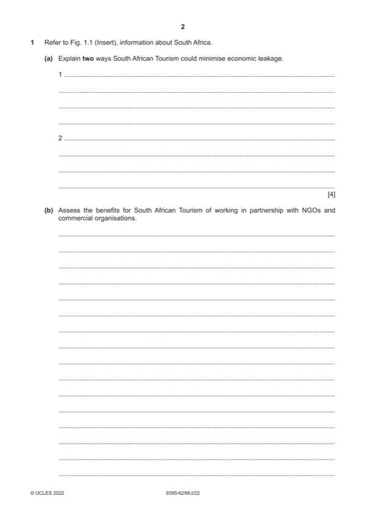

Question 1

Original paper page 2
Part 1(a) — solution
- Assessing the import leakages [1] such as equipment, food and other
- By working to transform the employment sector for the tourism industry
- Reduce overseas resorts and hotels from export leakages [1] this is
Mark points
- Assessing the import leakages [1] such as equipment, food and other
- By working to transform the employment sector for the tourism industry
- Reduce overseas resorts and hotels from export leakages [1] this is
Part 1(b) — solution
Assess the benefits for South African Tourism of working in 9
partnership with NGOs and commercial organisations.
Candidates are expected to be aware of organisations involved in tourism in
4.1 and their roles and priorities. They should be able to combine their
knowledge with information provided from Fig. 1.1.
Indicative content:
To strengthen the image of South Africa
Develop products and services that meet the needs of tourists
Assist with joint marketing initiatives
Assist with investment in long term benefits of tourism
Assistance with planning controls
Promote the positive and long lasting benefits to the community
Gain funds to assist with infrastructure development and benefits to the
community
Other relevant information should also be credited.
Mark according to the levels of response criteria below.
Level 3 (7–9 marks) can be awarded for assessment of the benefits of
working in partnerships. Candidates effectively assess a range of benefits
and clearly attempt to weigh up their significance. There should be sound
and frequent evidence of thorough, detailed and accurate knowledge and
understanding of concepts and principles using appropriate terminology.
Level 2 (4–6 marks) can be awarded for an explanation of a number of
possible benefits of working in partnership. There may be some attempt to
assess some benefits. The answer is relevant and accurate and shows
reasonable knowledge and understanding of concepts and principles with
some use of specialist vocabulary.
Level 1 (1–3 marks) will identify/describe some possible benefits of
partnerships. Information may be in the form of a list, explanations are
incomplete and arguments partial (if present). The answer lacks coherent
organisation and there is little or no attempt to assess. The answer is basic
and shows limited knowledge and understanding of concepts and principles
with limited use of appropriate terminology.
Level 0 (0 marks) No content worthy of credit.
2022 Page 6 of 10
9395/42 Cambridge International A Level – Mark Scheme May/June 2022
Mark points
- Include the ideas shown in the solution above.
Part 1(c) — solution
Discuss the reasons why mass tourism may cause conflicts with 12
conservation efforts.
Candidates are expected to be aware of tourism strategies and negative
tourism impacts.
Indicative content:
Mass tourism might cause:
Damage to the landscape through trampling and erosion
Increase in litter, plastics, fires
Cause a disturbance to animal breeding patterns and habitats
Vandalism of sites
Traffic congestion and pollution (air, noise, water)
Extinction of animals
Depletion of resources
Sociocultural and economic impacts linked to conservation
Other relevant information should also be credited.
Mark according to the levels of response criteria below.
Level 3 (9–12 marks) can be awarded for discussing a number of reasons
that tourism might cause conflict with conservation. Candidates effectively
discuss a number of reasons and attempt to weigh up the significance of
each. There is sound and frequent evidence of thorough, detailed and
accurate knowledge and understanding of concepts and principles using
appropriate terminology.
Level 2 (5–8 marks) can be awarded for an explanation/analysis of a
number of reasons that tourism might cause conflicts with conservation.
There may be some attempt to discuss some reasons. The answer is
relevant and shows reasonable knowledge and understanding of concepts
and principles with some use of specialist vocabulary.
Level 1 (1–4 marks) will identify/describe the reasons tourism might cause
conflicts with conservation. Information may be in the form of a list
explanations are incomplete and lack coherent organisation and arguments
are partial (if present). There is little or no attempt to discuss. The answer is
basic and shows limited knowledge and understanding of concepts and
principles with limited use of appropriate terminology. Answers may be
generic in their description.
Level 0 (0 marks) No content worthy of credit.
2022 Page 7 of 10
9395/42 Cambridge International A Level – Mark Scheme May/June 2022
Mark points
- Include the ideas shown in the solution above.